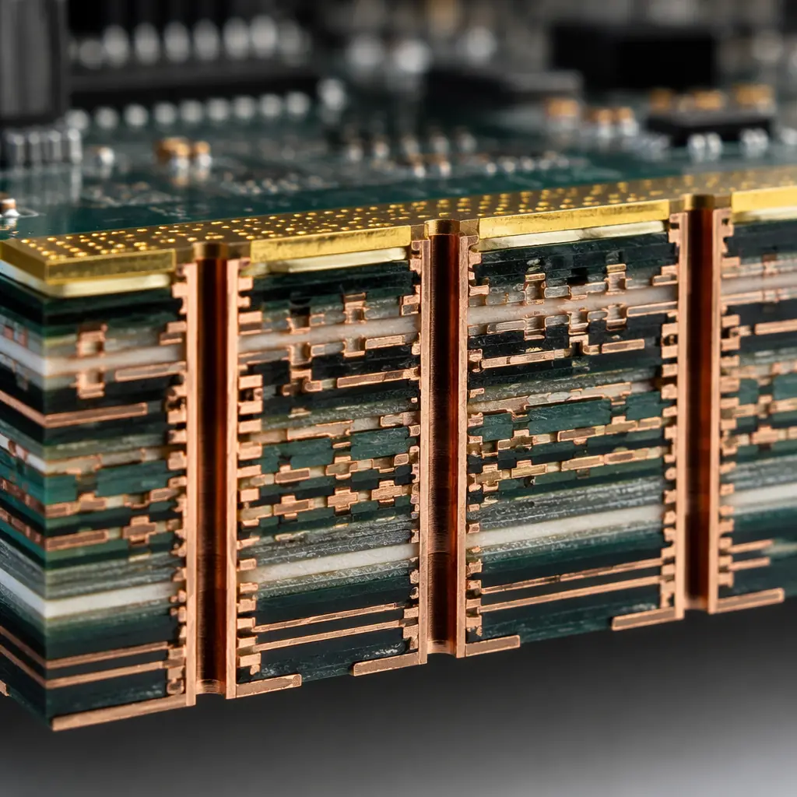
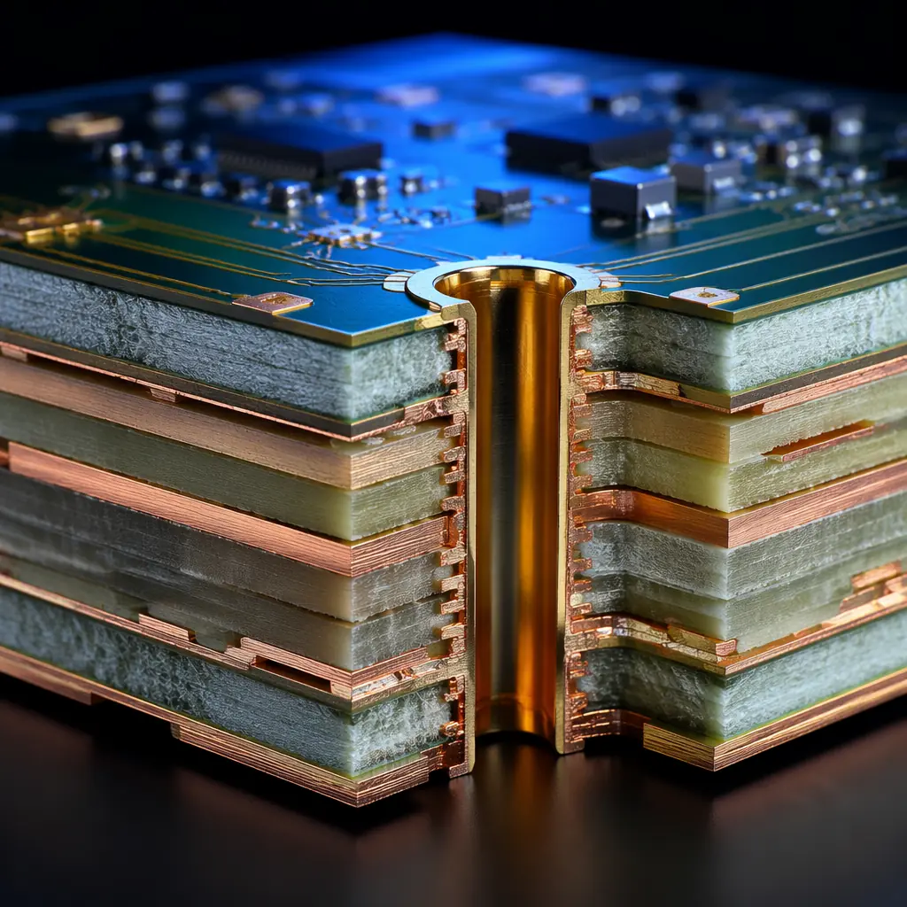

Data center server motherboards are among the most demanding PCB designs in the electronics industry. A single hyperscale server board may carry 400G Ethernet controllers, 32-core processors, DDR5 memory channels, and PCIe 5.0 lanes — all on a 20-32 layer PCB that must maintain signal integrity while dissipating over 100W of thermal load. For procurement engineers sourcing these boards, understanding the manufacturing requirements is not optional — it is the difference between a reliable cloud infrastructure and a rack full of field failures.
At Huaxing PCBA, we manufacture high-layer-count PCBs for server and networking applications at our 15,000 m² facility in Shenzhen. With 8 SMT lines, IATF 16949 certification, and in-house impedance TDR testing, we support everything from prototype backplanes to volume production of compute node boards. This guide covers the material, stackup, and thermal decisions that determine whether a server PCB meets its performance targets.

Layer Count and Stackup Architecture for Server Boards
Server PCB layer count is driven by three factors: signal escape from high-pin-count BGAs, power delivery network (PDN) impedance requirements, and isolation between sensitive analog and high-speed digital domains. A modern dual-socket server board typically demands 18-26 layers; a switching backplane for 400G fabric can exceed 32 layers.
BGA Escape Routing Drives Layer Count
A single LGA-4677 server socket has over 4,600 pins. Routing all DDR5, PCIe 5.0, and power pins requires at least 8-10 signal layers with blind and buried vias. Each additional high-pin-count component (network controller, CXL accelerator) adds 2-4 layers. Our facility supports blind, buried, and back-drilled vias up to 32 layers with 0.2mm laser-drilled microvias.
PDN Design Requires Dedicated Power Layers
Server CPUs draw 200-400W at sub-1V core voltages, demanding power plane impedance below 1 mΩ. A proper stackup dedicates 4-6 layers to power distribution with 2oz-4oz copper. See our copper weight selection guide for specifying heavy copper layers in mixed-weight stackups.
Signal Isolation Between Clock, RF, and Digital Domains
Server boards mix 100G PAM4 serial links, DDR5 memory buses at 5600 MT/s, and PCIe 5.0 at 32 GT/s. Crosstalk between adjacent signal layers must be below -40 dB. Our PCB stackup design guide covers the shielding and ground-plane strategies that make mixed-signal server boards manufacturable.
Procurement Reality: Most Chinese PCB fabs quote 20+ layer server boards at 8-12 week lead times. Huaxing delivers production-qualified 24-layer server boards in 5-7 working days using domestic supply chains for Isola and Panasonic-equivalent laminates — without the export-control delays that affect Rogers and other ITAR materials.
Low-Loss Laminate Selection for 56 Gbps and Beyond
Signal loss at 28 GHz Nyquist frequency (56 Gbps PAM4) eliminates standard FR-4 from consideration. The material choice cascades through every downstream decision: dielectric thickness, trace width, via stub length, and cost. Three material tiers dominate the server PCB market in 2026.

| Material | Dk @ 10GHz | Df @ 10GHz | Max Data Rate | Relative Cost |
|---|---|---|---|---|
| FR-4 (standard) | 4.2-4.5 | 0.020 | ≤ 10 Gbps | 1.0× |
| Mid-Loss (Megtron 4 / IT-170GRA) | 3.6-3.8 | 0.008-0.010 | ≤ 28 Gbps | 2.5× |
| Low-Loss (Megtron 6 / IT-968G) | 3.4-3.6 | 0.004-0.006 | ≤ 56 Gbps | 4.0× |
| Ultra-Low-Loss (Megtron 8 / IT-988G) | 3.2-3.4 | 0.002-0.003 | 112 Gbps+ | 7.0× |
For most cloud server boards operating at PCIe 5.0 (32 GT/s) or 100G Ethernet (53.125 Gbps per lane), low-loss materials like Megtron 6 or IT-968G provide the right balance of signal integrity and cost. Ultra-low-loss materials are reserved for 400G/800G switch backplanes where every fraction of a dB matters.
Verify Glass-Style and Resin Content with Your Fab
Low-loss laminate performance varies by glass weave style. 106 and 1035 glass styles minimize skew at high frequencies but cost more. Open-weave 1080 glass in low-loss resin can create impedance discontinuities above 25 GHz. Our engineering team reviews your stackup before quoting to flag glass-style issues that cause field failures. See our laminate selection guide for the full comparison.
Specify Back-Drilling for Via Stubs Above 5 Gbps
An un-removed via stub creates a quarter-wave resonator that causes severe insertion loss at specific frequencies. For 56 Gbps PAM4 signals, stubs must be removed to within 6 mils of the signal layer. Our back-drilling guide covers stub length tolerances and inspection methods.
Thermal Management for 100W+ Server Processors
A single server CPU socket may dissipate 200-400W. Multiply by two sockets, add four DIMM channels, network controllers, and voltage regulators — and the total board-level thermal load exceeds 800W. The PCB itself must carry heat away from hot spots without delamination or warpage.
Heavy Copper Inner Layers as Thermal Spreaders
Embedding 3oz-6oz copper planes in the inner layers directly below CPU and VRM zones acts as a lateral heat spreader, reducing hot-spot temperatures by 8-15°C compared to 1oz planes. Our heavy copper PCB guide shows the manufacturing considerations for mixed-weight stackups.
Thermal Via Arrays Under BGA Packages
Dense thermal via arrays (0.3mm pitch, 0.15mm hole) under CPU BGAs provide the lowest thermal resistance path to internal copper planes. Via-in-pad with conductive fill adds ~15% to board cost but improves thermal conductivity by 300% over standard plated vias. Review our via fill types comparison for trade-offs.
High-Tg Material for Lead-Free Assembly and Long-Term Reliability
Server boards undergo multiple reflow cycles during assembly (SMT top, SMT bottom, selective soldering). High-Tg FR-4 (Tg ≥ 170°C) or polyimide-based laminates prevent delamination during repeated thermal cycling. All Huaxing server-grade laminates are rated Tg 170-180°C minimum. See our materials comparison guide for Tg vs. Td specifications.
Key Takeaway: Thermal management is a PCB design problem, not just a heatsink problem. The difference between a server board that throttles at 85°C ambient and one that runs reliably at 95°C is often the copper weight and via structure specified in the fabrication drawing — not the heatsink selection.
IPC Class and Reliability Requirements for Server PCBs
Data center hardware operates 24/7/365 with a target service life of 5-7 years. Unlike consumer electronics, server boards cannot be field-repaired — a single PCB failure triggers a rack-level service event. The manufacturing quality standard matters.
| Requirement | IPC Class 2 | IPC Class 3 (Recommended) |
|---|---|---|
| Annular ring minimum | 0.05mm breakout allowed | 0.025mm, no breakout |
| Plating void allowance | ≤ 5% of hole wall | No voids permitted |
| Solder joint inspection | Visual sampling | 100% AOI + X-Ray on BGA |
| Conformal coating | Optional | Required for humidity > 60% |
| Impedance tolerance | ±10% | ±5% with TDR report |
Most hyperscalers specify IPC Class 3 for server motherboards and backplanes. The incremental cost (typically 15-25% over Class 2) is justified by the cost of a single rack-level failure: a $500 board failure in a $250,000 server chassis costs far more in downtime and field service. Our IPC Class 2 vs Class 3 guide provides a detailed cost-benefit analysis.
Summary: Specifying Server PCBs for Manufacturability
Data center server PCB procurement reduces to four decisions: layer count (determined by BGA pin count and PDN requirements), laminate grade (low-loss for 56 Gbps, ultra-low-loss for 112 Gbps), copper weight (3oz-6oz inner layers for thermal), and IPC class (Class 3 for hyperscale, Class 2 for cost-sensitive edge servers).
At Huaxing PCBA, we manufacture up to 32-layer server PCBs with ±5% impedance control, back-drilling to 6 mil stub length, and full AOI + X-Ray inspection. Our 8 SMT lines support prototype runs of 5-50 units and volume production of 5,000+ units per month with 24-hour quick-turn engineering samples. Read our supplier audit checklist or contact our engineering team to review your server board stackup before quoting.